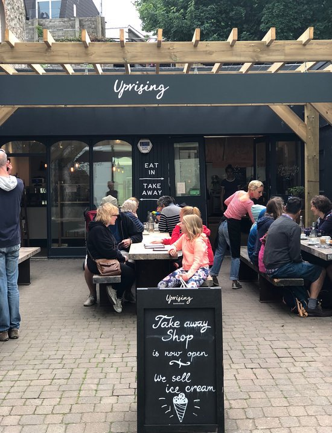
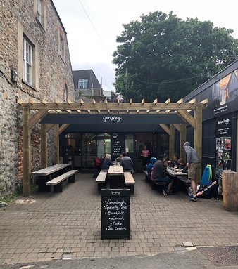
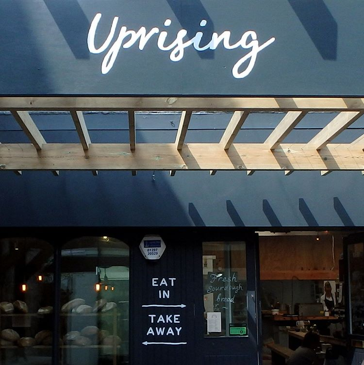
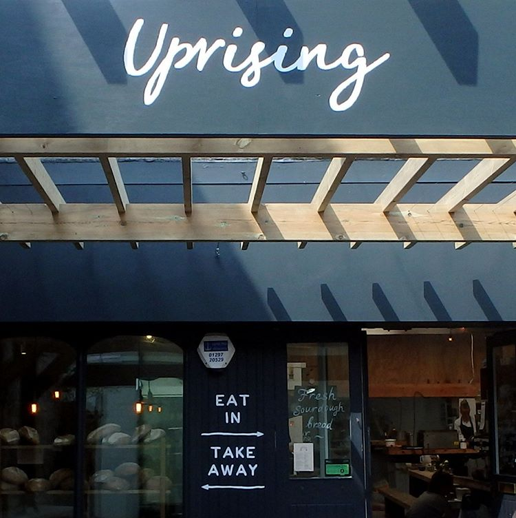
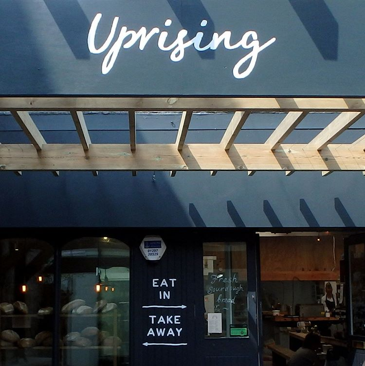
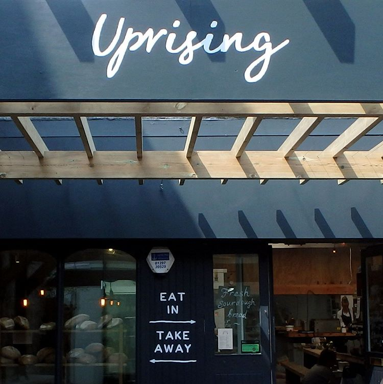

 


Maker Brothers worked again with Shed Design to create a secondary space to the iconic Lyme Regis Bakery. Turning the adjacent hairdressers into a new take away option for the bakery and developing the outside courtyard into a seating area with heavy gazebo. The space was transformed to fulfil the needs required by the bakery’s popularity.
